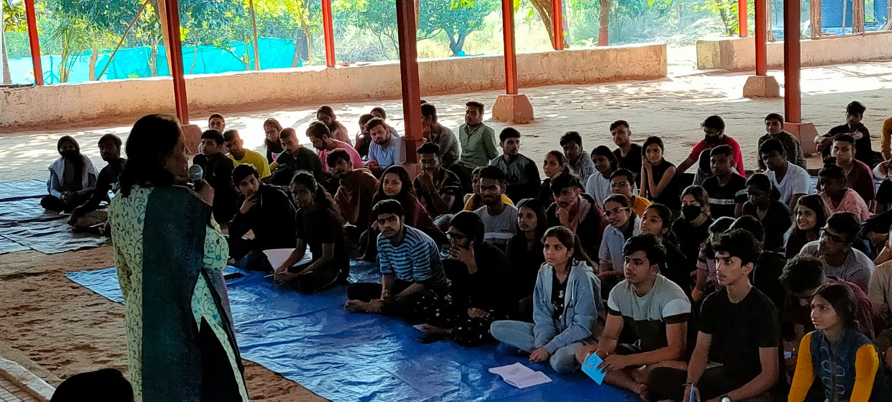
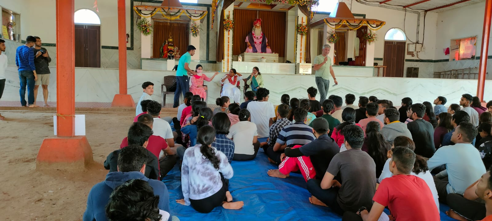
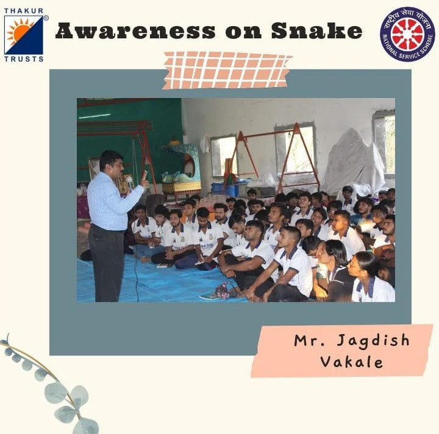
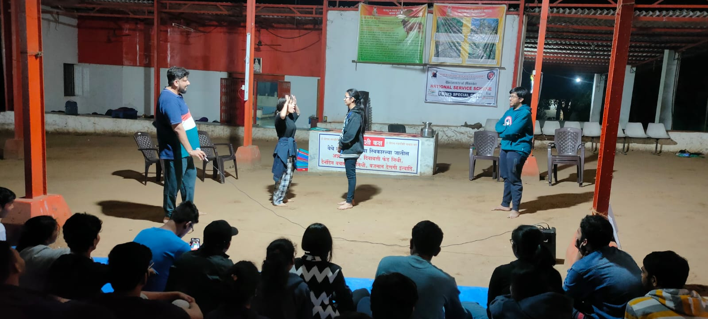
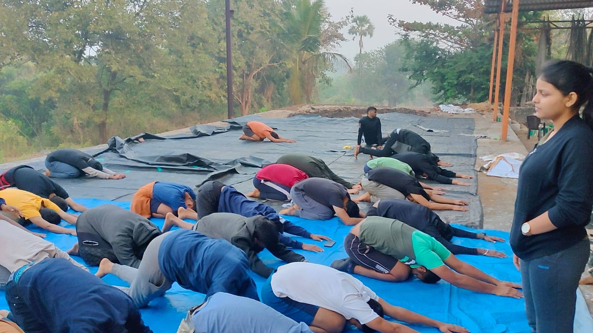
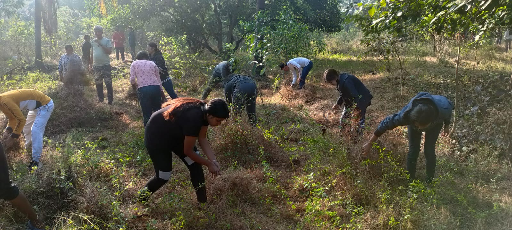

| Photo |
Name of Activity |
Details |
Date |
Attended by |
|  |
Ayurveda in day-to-day life and its uses |
volunteers attended the session conducted by Aparna Deshmukh ma’am. Ayurveda in day-to-day life and its uses were explained. . |
24/12/2021 |
Aparna Deshmukh ma’am. |
|  |
02 days Ekai Devi Mandir, followed by prayer (bhajan) session. |
The trustee of the ashram Mr. Nishad Patankar along with Mr. Shailesh visited the camp. After which all the volunteers were taken to the Ekai Devi Mandir, followed by prayer (bhajan) session. Also Christmas was celebrated |
25/12/2021 |
NSS students and Mr. Nishad Patankar & Mr. Shailesh . |
|  |
Awareness on Snake |
Teachers from various departments visited the camp on this day. A lecture was then taken by Jagdish Vakale sir, basic information about snakes and reptiles along with their identification was given. Russel Viper and Rat Snake were the two snakes bought for demonstration. |
26/12/2021 |
NSS Departmental Staff and Jagdish Vakale sir. |
|  |
how to act better in street |
A lecture was then conducted by Deepak Kumar Tiwari sir, various qualities like leadership, teamwork, unity along with tactics on how to act better in street plays/role plays were explained to the volunteers. |
27/12/2021 |
Deepak Kumar Tiwari |
|  |
exercise & street play |
The fifth day the special camp started with morning exercise as usual. It was then followed by a yoga session conducted by miss. Meghna Singh. Volunteers then completed the daily chores assigned to them i.e. the field work. Volunteers were then sent for bathing after which the lunch was served. All the groups performed their street plays on this day. |
28/12/2021 |
Meghna Singh & NSS Students |
 |
human-sex trafficking, POCSO act, LGBTQ+ movement |
A session was then conducted by miss. Vanita Mishra about human-sex trafficking, also information about POCSO (Protection Of Children from Sexual Offence) Act, 2012 was given. The evening was then occupied by Sumit Pawar sir, he explained the whole LGBTQ+ movement and answered all queries asked by the volunteers. |
29/12/2021 |
Vanita Mishra, Sumit Pawar sir & NSS students |
|  |
trekking & award distribution session |
The start of the seventh day of the special camp was a little different from other days as P.O took all the volunteers on a short trek to the cliff in the morning after which volunteers completed their daily chores i.e. the field work. Volunteers were then sent for bathing after which the lunch was served. Prizes distribution for the special camp was conducted, Shraddha Gupta from group Brahmand won the best female camper whereas Virendra Yadav from group Saksham won the best male camper also group Saksham won the best group award. |
30/12/2021 |
Staff members and Students |